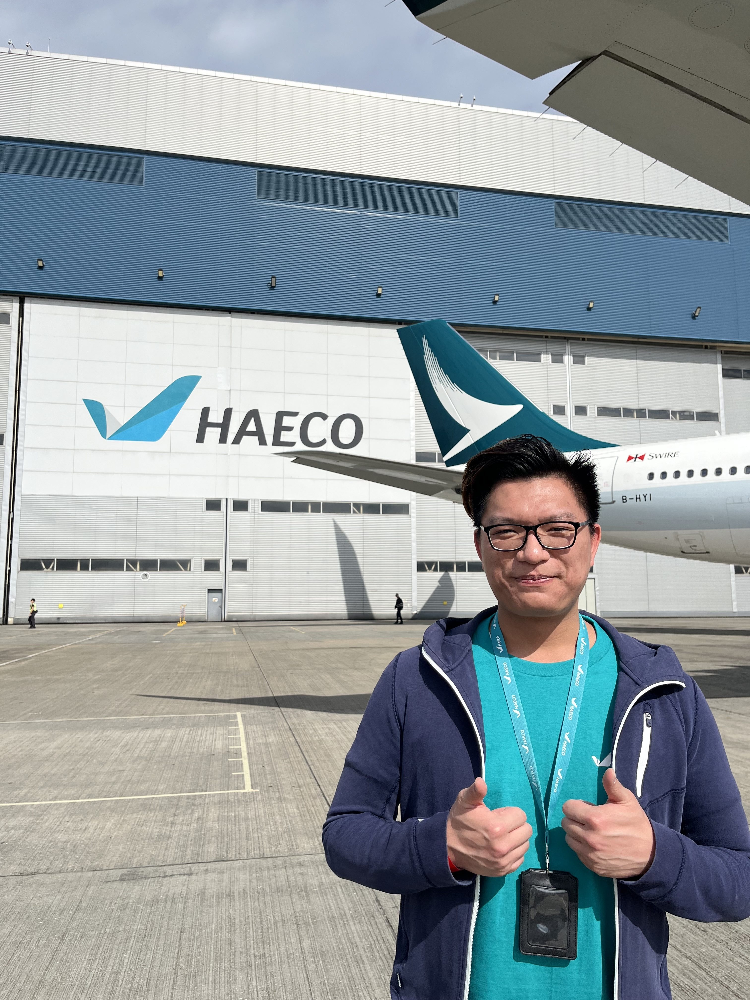

Completed
HAECO Co-op Experience
Technology Innovation | Transformation & Technology Department
September 2025 - January 2026 | 5 Months
An intensive 5-month journey working on AI-driven and data-driven solutions for operations optimization and digital transformation at Hong Kong Aircraft Engineering Company Limited (HAECO).
Placement Snapshot
5
Months at HAECO
6
Major milestones
AI + Data
Transformation and innovation focus